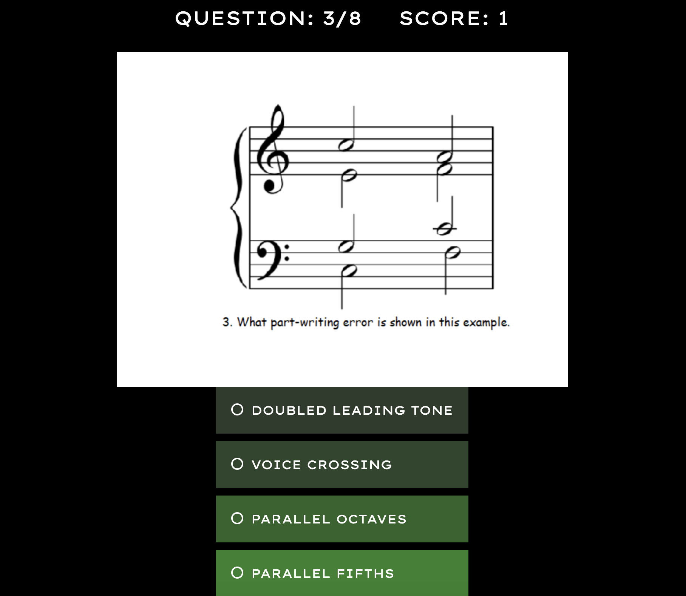

About Me
I am a web developer and recent graduate of the Engineering Immersion Program through Thinkful. Coding is a great career fit for me because I thoroughly enjoy creating and researching solutions that bring life to new and existing ideas.
I am a creative person, whether through coding or through my passion of music. I hold a Bachelor of Arts Degree in Music Education and a Master of Arts in Music Composition. I am a percussionist and enjoy playing all genres of music, as well as creating my own compositions and seeing them come to life.
Please feel free to browse through my projects or to contact me by using the links below.
Projects
The AP Music Theory Quiz App is a multiple choice quiz app for high school AP Music Theory students. Each question appears with a musical example and provides feedback on student achievement as the quiz progresses. This project utilized HTML, CSS, JavaScript, and JQuery.
Contact
You can reach me by email at jonathanjackson424@gmail.com, or by filling out this contact form! Also, please find my GitHub and LinkedIn profile pages below the form.